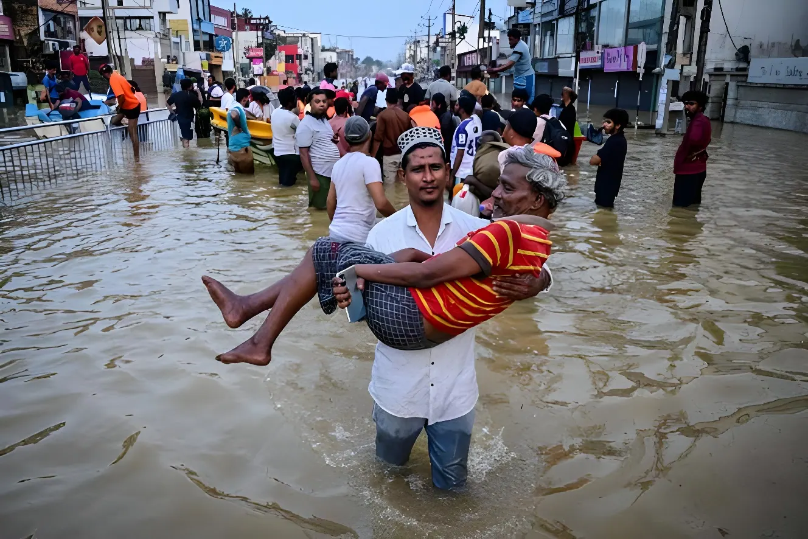

Début août 2026, des pluies torrentielles se sont abattues sur les hauteurs centrales du Sri Lanka, provoquant glissements de terrain et crues soudaines qui ont fait au moins sept morts et contraint des milliers d'habitants à évacuer. Un nouvel épisode dévastateur qui frappe une région encore convalescente, neuf mois à peine après le passage du cyclone Ditwah, la pire catastrophe naturelle de l'histoire récente du pays.
Le week-end du 1er au 2 août 2026, de fortes précipitations se sont abattues sur les régions montagneuses du centre du Sri Lanka, provoquant des crues soudaines et des glissements de terrain. Dès le 4 août, le gouvernement a fermé les écoles dans l'ensemble des hauteurs centrales, région réputée pour ses plantations de thé perchées sur des pentes raides et particulièrement exposée aux coulées de boue. Selon Pradeep Kodippili, porte-parole du Disaster Management Centre (DMC), cinq personnes sont mortes ensevelies après qu'un glissement de terrain a englouti deux habitations, tandis que deux autres ont péri dans les inondations. Trois personnes ont été blessées et au moins deux portées disparues.
Les localités les plus touchées se situent autour de Nawalapitiya et dans les districts de Nuwara Eliya et de Badulla, où d'importants axes routiers ont été coupés par des rochers, des coulées de boue et des poteaux électriques abattus. La marine et l'armée sri-lankaises ont été déployées pour porter secours aux habitants piégés par la montée des eaux, tandis que la chaîne locale Hiru TV diffusait des images de soldats progressant dans des rues submergées pour évacuer des familles.
Le cyclone Ditwah frappe l'ensemble du pays, provoquant les inondations et glissements de terrain les plus étendus depuis deux décennies dans les 25 districts du Sri Lanka.
Le bilan de Ditwah grimpe progressivement jusqu'à environ 646 morts et 173 disparus selon le DMC ; l'Inde déploie une aide humanitaire massive via l'opération Sagar Bandhu.
De nouvelles pluies torrentielles s'abattent sur les hauteurs centrales, encore fragilisées par les dégâts de Ditwah ; premiers glissements de terrain signalés autour de Nawalapitiya.
Le DMC confirme cinq morts dans un glissement de terrain ayant enseveli deux maisons ; les écoles sont fermées dans tout le centre du pays.
Le bilan est porté à sept morts, avec près de 3 500 personnes évacuées et 129 habitations endommagées ; les autorités n'excluent pas une révision à la hausse du bilan.
Cet épisode d'août 2026 frappe une région qui n'a pas fini de panser ses plaies. Fin novembre 2025, le cyclone Ditwah avait balayé l'île entière, provoquant selon le président Anura Kumara Dissanayake « la catastrophe la plus difficile » de l'histoire du pays. Les inondations et glissements de terrain qui en ont résulté avaient touché environ 2,2 millions de personnes dans les 25 districts du Sri Lanka, déplacé plus de 800 000 habitants et détruit ou endommagé plus de 25 000 logements. Selon le bilan final communiqué par le Disaster Management Centre fin décembre 2025, la catastrophe avait fait environ 646 morts et laissé 173 personnes portées disparues, pour des dégâts matériels estimés à 4,1 milliards de dollars.
Les mêmes districts de Kandy, Badulla et Nuwara Eliya, où se concentrent les plantations de thé du pays, avaient déjà payé le plus lourd tribut lors de Ditwah. Neuf mois plus tard, une partie des infrastructures routières et ferroviaires reste fragilisée, ce qui a compliqué l'acheminement des secours lors du nouvel épisode d'août 2026.
« C'est peut-être la pire inondation que notre région ait connue depuis trente ans. »
— Un habitant de la banlieue de Colombo, cité par l'AFP après le passage du cyclone Ditwah, novembre 2025Les mudslides et crues soudaines sont devenus un phénomène quasi annuel au Sri Lanka. Le relief accidenté des hauteurs centrales, où les pentes ont été largement déboisées au profit des plantations de thé et de caoutchouc, rend les sols particulièrement instables lorsqu'ils sont saturés d'eau. À cela s'ajoutent une urbanisation croissante des zones à risque, des rivières et réservoirs qui débordent rapidement lors des épisodes de mousson intense, et un réseau d'alerte précoce que les autorités elles-mêmes jugent perfectible. Après l'épisode d'août 2026, l'Institut national de recherche sur le bâtiment (NBRO) a de nouveau émis des alertes de niveau 3 (rouge) pour les glissements de terrain dans les districts de Badulla, Kandy, Matale et Nuwara Eliya.
| Épisode | Période | Bilan (morts) |
|---|---|---|
| Glissements de terrain | Mai 2016 | ~100+ |
| Inondations / glissements | Mai 2017 | ~224 |
| Inondations / glissements | Mai 2018 | ~22 |
| Inondations / glissements | Mai-juin 2024 | ~16 |
| Cyclone Ditwah | Nov. 2025 | ~646 |
| Inondations / glissements | Août 2026 | 7+ (bilan provisoire) |
D'un épisode à l'autre, le scénario se répète : pluies torrentielles, glissements de terrain dans les mêmes districts vulnérables, écoles fermées, déploiement de l'armée et de la marine. Si le bilan d'août 2026 reste sans commune mesure avec les 646 morts de Ditwah, il rappelle la fragilité structurelle d'un pays où la déforestation, l'urbanisation des zones à risque et le dérèglement climatique se conjuguent pour rendre chaque mousson potentiellement meurtrière. Pour les autorités sri-lankaises, encore engagées dans la reconstruction post-Ditwah, la question n'est plus de savoir si de nouvelles pluies extrêmes frapperont le pays, mais quand — et si les infrastructures de prévention pourront, d'ici là, être suffisamment renforcées.